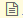

経路1
早
楽
定期代
09:10
発
→
11:30
着
総額
11.990円
所要時間
2時間20分
乗車時間
2時間11分
乗换
1回
テキスト

印刷
経路
乗車位置
運貨
指定席/料金
距離
名古屋空港
時刻表
09:10-09:40
30分
名古屋空港線[名古屋](名古屋
訳前行)
700円
（9分）
名古屋駅前/名古屋
14番線発
時刻表
横内図
路線図
地図
ルクニン
テキス
09:49-11:30
101分
のにほ310号(東京行)
出張バック
6,260円
指定席
5,030円
366.0km
東京
14番線発
時刻表
横内図
路線図
地図
テルク
ルクニン
テキス